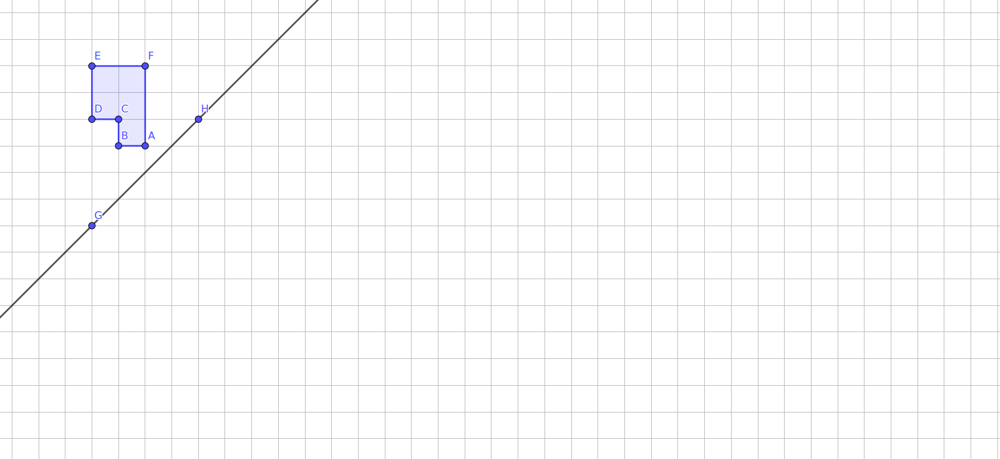

A reflection is the first transformation we will explore. Each reflection is defined by a mirror line and the reflection takes each point to its reflected image. If we were to fold the plane across the mirror line, the points and their images would fall on top of each other. The exploration Exploration 4.1.1 is best done by hand so that you get a deeper understanding of what happens to points in a transformation. Print out the pictures and use colored pencils. The ability to fold your paper may prove helpful!
A pdf version of this activity is available MAKE SURE TYPO on p.2 part b is corrected (y-axis not x-axis). Be sure to check that students correctly sketch the reflection in Task 4.1.1.a. Encourage students to compare their sketches with others and discuss if there are different sketches. Miras (math education supply stores) or small mirrors (craft stores) can be effective at resolving differences and helping students visualize, but I recommend letting them try to draw the reflection first without these aids.
Subsection4.1.1Exploring Reflections
Exploration4.1.1.Reflections in the Cartesian Coordinate Plane.
(a)
Reflect pentomino \(ABCDEF\) across line \(\overleftrightarrow{GH}\) by thinking of the line as either a mirror or a fold-and-trace line. In what ways are the reflected image \(A'B'C'D'E'F'\) and the original figure \(ABCDEF\) the same? In what ways are they different?

Answer.
If you are using paper, you can check your answer by folding across line \(\overleftrightarrow{GH}\text{.}\) Do your figures line up?
(b)
On your sketch for Task 4.1.1.a, label the new vertices by adding an apostrophe \('\) to each letter; point \(A'\) will be the reflection of point \(A\) across line \(\overleftrightarrow{GH}\text{,}\) point \(B'\) will be the reflection of point \(B\) across line \(\overleftrightarrow{GH}\text{,}\) and so forth, forming pentomino \(A'B'C'D'E'F'\text{.}\)
Where does \(\overline{BB'}\) intersect \(\overleftrightarrow{GH}\text{?}\) How is this point related to segment \(\overline{BB'}\text{?}\)
What type of angle is formed by the intersection of \(\overleftrightarrow{BB'}\) and \(\overleftrightarrow{GH}\text{?}\)
Using the 1 cm graph paper as a guide, what is the shortest distance from point \(B\) to line \(\overleftrightarrow{GH}\text{?}\) What is the distance from \(B\) to \(B'\text{?}\)
What happens to the other points in the reflection? Suppose \(P\) is any point in the plane and let \(P’\) be its image created by reflecting it across any line in the plane. What do you expect to be true about the relationship between the segment \(\overline{PP'}\) and the reflecting line?
What happens if you reflect point \(G\) across line \(\overleftrightarrow{GH}\text{?}\) Is that true for any point on \(\overleftrightarrow{GH}\text{?}\)
(c)
Pentomino \(ABCDEFGHIJ\) and its reflection \(A’B’C’D’E’F’G’H’I’J’\) are shown below. Use what you discovered in Task 4.1.1.b to sketch the reflecting line. Describe your technique.
Exploration4.1.2.Reflecting Across the Coordinate Axes.
Every point on the Cartesian plane can be identified by its coordinates \((x,y)\) where \(x\) and \(y\) represent the location of the point as being \(x\) units to the right and \(y\) units above the origin. Use a copy of the graph below to complete the following tasks. You will need to be able to draw in four colors as described.
Figure4.1.1.Four Points on Coordinate Grid for Exploration Exploration 4.1.2
(a)
Use a red pencil to mark the reflected images \(A’\text{,}\)\(B’\text{,}\)\(C’\text{,}\) and \(D’\) of the points \(A\text{,}\)\(B\text{,}\)\(C\text{,}\) and \(D\) across the horizontal (\(x\)-) axis. Determine their coordinates. What effect does reflecting across the \(x\)-axis have on coordinates?
(b)
Use a green pencil to mark the reflections of the original points \(A\text{,}\)\(B\text{,}\)\(C\text{,}\) and \(D\) across the vertical (\(y\)-) axis. Determine the coordinates of their images \(A”\text{,}\)\(B”\text{,}\)\(C”\text{,}\) and \(D”\text{.}\) What effect does reflecting across the \(y\)-axis have on the coordinates?
(c)
Reflect the red points \(A’\text{,}\)\(B’\text{,}\)\(C’\text{,}\) and \(D’\) sketched in Task 4.1.2.a across the vertical (\(y\))-axis, using a blue pencil to mark them and label the new points with asterisks, \(A*\text{,}\)\(B*\text{,}\)\(C*\text{,}\) and \(D*\text{.}\) Determine the coordinates of the newest points \(A*\text{,}\)\(B*\text{,}\)\(C*\text{,}\) and \(D*\text{.}\) What effect does reflecting first across the \(x\)-axis and then across the \(y-axis\) have on the coordinates (from the original \(A\) to the final \(A*\) for example)?
(d)
Focus on the original points \(A\text{,}\)\(B\text{,}\)\(C\text{,}\) and \(D\) and the final points \(A*\text{,}\)\(B*\text{,}\)\(C*\text{,}\) and \(D*\text{.}\) Is there a single reflecting line that gives this mapping? What type of transformation describes this mapping?
Hint.
Draw the quadrilaterals \(ABCD\) and \(A*B*C*D*\text{.}\) If there is a reflecting line, the quadrilaterals should line up when you fold along that line.
(e)
Suppose that you were to reflect the green points from Task 4.1.2.b across the horizontal (\(x\))-axis. What do you notice about their images in relation to other points?
Subsection4.1.2Key Ideas regarding Reflections
In this section, we have draw reflections by hand using a coordinate grid as an aid and we observed a few of the properties of reflections. Since we will be building on these discoveries, it is wise to summarize the main ideas for future reference.
Definition4.1.2.
A reflection across a line \(\ell\) is a transformation of the points in the plane which maps each point \(P\) in the plane by flipping it over line \(\ell\text{.}\) The reflecting line \(\ell\) is called the mirror or axis. The image of a point \(P\) under a reflection (or any other transformation) is the point \(P'\) that the transformation sends \(P\) to; in this case, the reflection of point \(P\text{.}\)
While the notion of reflecting can be intuitively understood as flipping, the properties you discovered in Task 4.1.1.b provide a more specific definition that can be extended to other geometries. These properties are identified in the next exercise.
Checkpoint4.1.3.Defining Property of a Reflection.
The reflecting line \(\ell\) meets the segment \(\overline{PP'}\text{,}\) connecting a point \(P\) and its reflected image \(P'\text{,}\) at a ________-degree angle.
So far, we have only reflected across lines that were either horizontal, vertical, or which make a 45-degree angle to the horizontal. As we expand our consideration to other reflections, we will drop the coordinate grid and use technology.